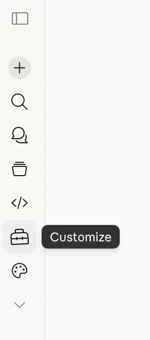
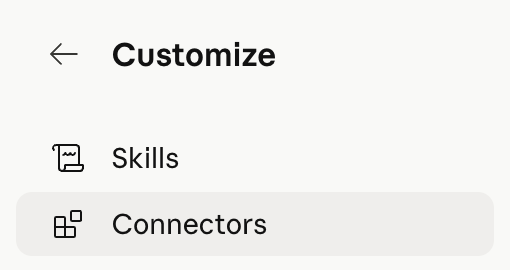
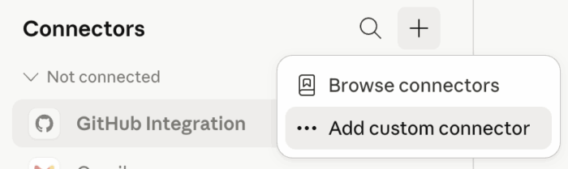
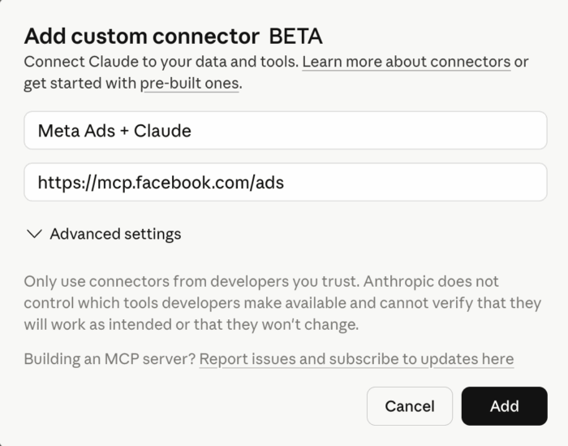
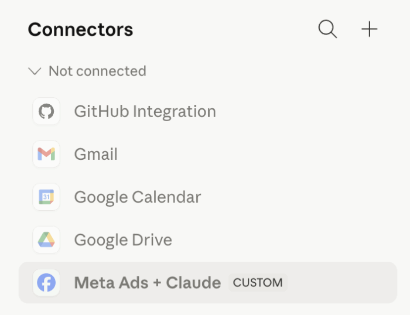
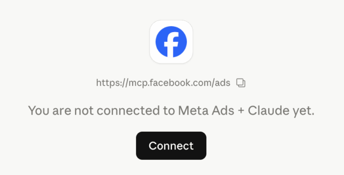
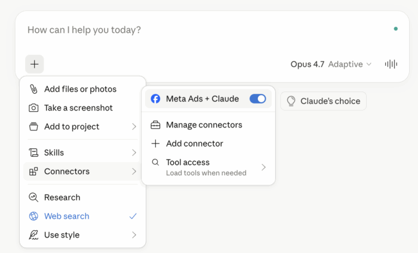

Підключаємо Meta Ads до Claude: покрокове налаштування, кейси і ризики
У попередньому пості я писав про саме оголошення Meta AI Connectors і свою позицію - тестую на одному акаунті, бо відставати від конкурентів страшніше ніж ризик отримати бан. Тепер давай розберемо конкретику: як це налаштувати, що реально можна робити і де справжні ризики.
Одне важливе уточнення: AI Connectors зараз в open beta і доступні не всім. Пройти кроки нижче ти можеш - але отримати дані зі свого акаунту поки що вийде не у всіх.
Як підключити Claude до Meta Ads
Преміум підписка не потрібна - кастомні конектори доступні на всіх тарифах включно з безкоштовним. Безкоштовний тариф обмежений одним конектором одночасно. Якщо ти на Team або Enterprise - спочатку Owner організації має додати конектор, і тільки потім ти зможеш до нього підключитись.
Заходиш у Claude → натискаєш Customize в лівому меню.

Натискаєш Connectors.

Натискаєш + → Add custom connector.

Вводиш назву і URL MCP-сервера Meta: https://mcp.facebook.com/ads. Натискаєш Add.

Конектор з'явиться в списку, але ще не буде підключений.

Натискаєш Connect → проходиш Facebook Login → вибираєш бізнес-портфоліо які хочеш підключити до Claude.
Коли починаєш новий чат - натискаєш + → Connectors і вмикаєш свій конектор.

Які інструменти доступні
Після підключення Claude отримує доступ до списку інструментів Meta. Зараз їх 29. Ось найцікавіші:
- ads_get_ad_entities - дані по ефективності на рівні акаунту, кампанії, адсету або оголошення за будь-який період з фільтрами і розбивками
- ads_insights_advertiser_context - загальний огляд твого бізнесу і воронки, щоб Claude розумів контекст
- ads_insights_performance_trend - аналіз динаміки ключових метрик у часі
- ads_insights_anomaly_signal - незвичні патерни в результатах які варто перевірити
- ads_insights_industry_benchmark - порівняння твоїх адсетів з агрегованими бенчмарками схожих рекламодавців
- ads_insights_auction_ranking_benchmarks - які оголошення виграють аукціон, а які недостатньо доставляються
- ads_get_errors - помилки які блокують доставку на рівні кампанії, адсету або оголошення

6 реальних сценаріїв використання
1. Звітність і аналіз акаунту
Найочевидніше - але ефективне. Просиш Claude витягнути дані за будь-який період на будь-якому рівні: акаунт, кампанія, адсет, оголошення. Сортування по витратах, ROAS, CTR, частоті. Розбивки по віку, гео, плейсменту, пристрою.
Різниця від Ads Manager - це діалог. Ads Manager швидкий якщо ти вже знаєш які колонки і фільтри хочеш. Claude замінює ті моменти коли ти б вивантажував в Excel щоб відповісти на трохи складніше запитання.
Приклад: "Покажи топ-10 адсетів по ROAS за останні 30 днів, але тільки ті де мінімум 50 конверсій, з розбивкою по плейсменту."
2. Діагностика проблем
Claude може виявляти аномалії - різке зростання CPM, проблеми з частотою, падіння конверсій які ти міг не помітити. Аналізує аукціонну ефективність: які оголошення виграють, які програють конкурентам. Плюс бенчмарки - чи твої результати взагалі в нормі для твоєї ніші.
Приклад: "Що незвичного в моєму акаунті цього тижня?" - і далі копаєш в те що знайде.
3. Перевірка помилок перед запуском
Meta показує помилки які блокують доставку - ті самі червоні попередження в кабінеті. Конектор дозволяє одним запитом просканувати весь акаунт замість того щоб клікати в кожну кампанію окремо. Це ловить тільки помилки конфігурації - не порушення правил і не обмеження на рівні акаунту.
Приклад: "Покажи всі помилки які блокують доставку в активних кампаніях і адсетах."
4. Здоров'я пікселя і сигналів
Три інструменти покривають якість даних: метадані конфігурації, оцінки якості сигналу і статистика об'єму подій. Той самий нудний аудит - чи піксель нормально спрацьовує, яка якість матчингу, чи приходять події в очікуваному об'ємі. Добре поєднується з Conversions API як перевірка що все налаштовано правильно.
Приклад: "Перевір здоров'я мого пікселя і якість матчингу подій, підсумуй що виглядає підозріло."
5. Створення кампаній і оголошень
Claude може створювати кампанії, адсети і оголошення. Важливо: все створюється в статусі PAUSED за замовчуванням. Нічого не йде в ротацію поки ти сам не запустиш в Ads Manager. Може також оновлювати існуючі сутності - бюджети, назви, таргетинг - і паузити або активувати на запит.
Приклад: "Продублюй мій найкращий адсет з трьома новими варіантами креативів, все в паузі для перевірки."
6. Каталог і e-commerce
Якщо запускаєш рекламу для e-commerce - конектор може створювати нові каталоги товарів, переглядати продукти і сети продуктів, показувати діагностику фідів і проблеми з видимістю товарів.
Приклад: "Знайди товари в каталозі з помилками фіду або проблемами видимості, поясни що їх спричиняє."
Ризики - і вони реальні
Два місяці тому людей банили за AI-інтеграції. Тепер Meta сама запрошує це робити. Це не пастка - найімовірніше ті бани були помилкою. Але я досі нервую, і це нормально.
Є кілька конкретних ризиків яких варто бути свідомим.
Повний доступ читання і запису. Будь-який інструмент з таким рівнем доступу має тебе насторожувати. Так, нові кампанії і оголошення створюються в паузі - але що може піти не так через баг або неточний промпт?
Конектор наслідує доступ твого Facebook-акаунту. Якщо в твоєму портфоліо є клієнтські акаунти - вони теж потрапляють в зону доступу. Це вже не тільки твій ризик.
Ризик завищених очікувань. Це справді потужна технологія. Але "автоматизую все і результати стануть кращі" - небезпечна думка. Репортинг і діагностика - низький ризик. Автоматичне внесення змін без нагляду - зовсім інша історія.
Якщо поки не відчуваєш себе готовим - зачекай. FOMO краще ніж втрата акаунту.
Тестуєш AI Connectors? Напиши в коментарях що пробував і як пройшло.